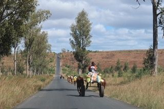
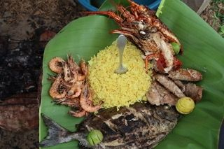
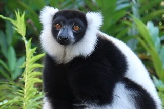

Vielen Dank liebes PRIORI-Team, dass wir wunderbare Ferien in Madagaskar mit euch erleben durften
„Liebe Frau Penning, wir haben wunderbare Ferien in Madagaskar verbracht. Das lag vor allem auch an der tollen Organisation von PRIORI in Basel (Beratung) sowie PRIORI in Madagaskar (Bodo und Parany, unserem Fahrer). Parany hat uns auf dieser Reise begleitet, es war sehr angenehm mit ihm zu reisen. Er war immer freundlich, aufmerksam und hat einen guten Humor. Wir haben zusammen viele schöne Momente erleben dürfen.
Die Anreise hat einwandfrei geklappt, den 2er-Sitz im Flugzeug können wir nur weiterempfehlen. Wir wurden am Flughafen in Antananarivo von Parany in Empfang genommen und mit einer handgeschriebenen Karte von Bodo, madagassischer Schokolade (hervorragend) sowie Postkarten (inkl. Marken) begrüsst und herzlich in Madagaskar willkommen geheissen.
Madagaskar mit seiner einzigartigen Flora und Fauna ist mehr als eine Reise wert und mit keinem anderen Land zu vergleichen.

Die Landschaft ist sehr vielfältig. Reisen in Madagaskar ist aufgrund der Infrastruktur eine langsame Angelegenheit und das ist auch gut so. Es wird alles viel entspannter. „Mora, mora“, der Lieblingsspruch der Madagassen, lässt die Uhren anders ticken. Die Menschen stehen bei Sonnenaufgang auf und gehen bei Sonnenuntergang ins Bett. Die Sonne bestimmt den Tagesrhythmus. Auch wir haben uns daran gehalten, zuerst etwas notgedrungen, weil das Licht oder der Internetempfang nicht so gut waren, dann aber bewusst. So konnten wir die Hektik, die uns im Alltag begleitet, einmal hinter uns lassen. Das haben wir sehr genossen. Reisen in Madagaskar braucht Zeit, für unsere Tour war die Reisezeit optimal bemessen.In diesen knapp 3 Wochen haben wir unglaublich viel erlebt, die Menschen arbeiten sehr hart und die Armut ist gross. Wir haben aber noch nie so viele Kinder gesehen und ihr Lachen gehört (jedoch kaum ein Kind je weinen gehört). Es waren die Menschen, die uns auf dieser Reise am meisten beeindruckt haben, wie sie mit bescheidenen Mitteln ihren Alltag meistern und dennoch keine Bitterkeit, sondern Fröhlichkeit sowie Selbstbewusstsein ausstrahlen. Mit ihrer ruhigen und freundlichen Art sind sie uns als Reisende offen begegnet. Französisch hilft, um mit den Menschen kommunizieren zu können. Kriminalität haben wir keine erlebt und haben auch nie Angst vor Diebstahl gehabt.

Der beeindruckendste Ausflug war wohl die Pirogenfahrt auf dem Canal des Pangalanes in Manakara mit Christian und dem wunderbaren Mittagessen an einem einsamen Palmenstrand. Christian und die vier Ruderer haben sich für uns den ganzen Tag Zeit genommen. Sie haben sogar für uns gesungen. Es war landschaftlich unglaublich schön. Zahlreiche Seerosen haben geblüht, man hört keinen Motorenlärm, sondern nur die Geräusche der Natur. Auch wenn man kein Krokodil sieht, dieser Ausflug auf dem Canal des Pangalanes in Manakara ist ein Geheimtipp, auch weil nicht viele Touristen nach Manakara gehen.
Unser Gesamtfazit:

Das waren wunderbare Ferien in Madagaskar, die uns unvergesslich bleiben werden und die wir wärmstens weiterempfehlen können. Wir sind uns bewusst, dass wir nur einen Teil von Madagaskar gesehen haben und wer weiss, vielleicht kommen wir einmal wieder.Die Organisation klappte von Anfang bis zum Schluss ausgezeichnet. Wir möchten uns hier noch einmal bei allen, insbesondere bei Ellen (Beratung), Parany (Fahrer) sowie bei Bodo (Organisation vor Ort) herzlich bedanken.
Liebe Grüsse aus Luzern“
(Sigrid S. und Beatrice M.)